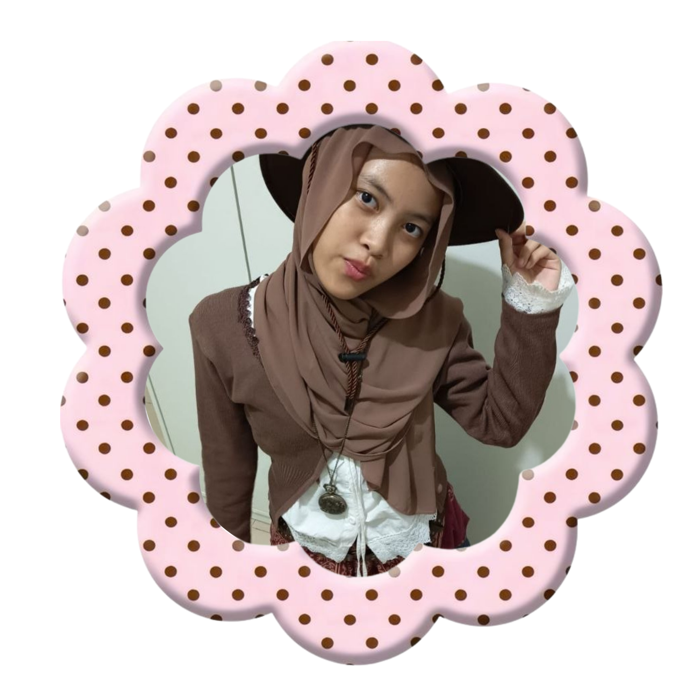

Profil Singkat 
Latisha Qawiyyu Nurhafa, 9 An-Nasr, SMPIT Al-Haraki
Tentang Saya 
Haii! Nama saya Latisha. Hobi saya menggambar, melukis, baking, dan main game. Sedikit fun fact tentang saya, saya dulu suka banget sama Dinosaurs. Pelajaran favorit saya di sekolah adalah Matematika, Art dan English! Saya lahir di Duri tanggal 21 September 2011. Kayaknya sebagian besar dari kalian ga tau apa itu Duri. Nahh, Duri itu adalah sebuah kota di Kecamatan Mandau, Kabupaten Bengkalis, Provinsi Riau! Dan sekarang saya tinggal di Depok. Saya sekarang sedang belajar bahasa Spanyol. Warna favorit saya biru. Makanan favorit saya adalah sushi dan minuman favorit adalah thai tea. Saya suka sepakbola! tapi saya ga main olahraga itu si, nonton aja. Saya sekarang lagi belajar tennis dan pickleball. Film favorit saya adalah 27 dresses. Saya suka genre romance, musical, dan fantasy.
Minat dan Bakat 
Minat saya adalah seni, hobi saya menggambar. Bakat saya adalah matematika.
Cita-cita dan Harapan 
Cita-cita saya menjadi seorang programmer atau game designer/developer
Kesan dan Pesan Selama Kelas IX 
Kesan saya di SMPIT Al-Haraki, sekolahnya seru. Banyak kegiatan-kegiatan dan ada pelajaran entrepreneur sehingga saya dapat mempersiapkan masa depan saya dengan baik. Saya juga suka sama club di kelas 9, karena kecepatan mengajar setiap guru beda2 di setiap level jadi lebih masuk/paham. Meskipun kelas 9 banyak ujiannya, tapi banyak juga kenangan2 dari kegiatan-kegiatan yang udah kta lalui.